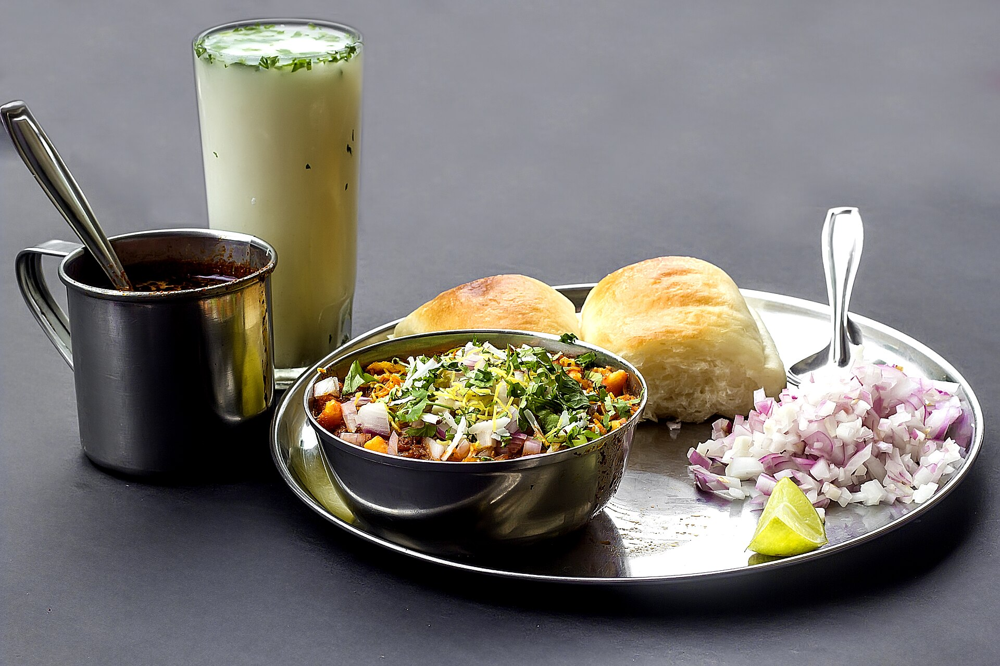

We left before sunrise, with the sky the colour of wet slate and the radio losing signal at every bend. The plan was simple: no plan, just the ghats, the rain and whatever the road decided to show us.
By the first climb the clouds had come down to meet us. Waterfalls appeared out of nowhere: thin silver threads on black rock, then roaring curtains that sprayed the windscreen as we passed. Every few kilometres there was a tapri with a tin roof, a kettle that never left the flame, and someone who wanted to know where we were going.
01The road that disappears
Visibility drops to a few metres near the top. You stop thinking about the destination and start thinking only about the next white line. It is slow and a little scary, and it is the most present we have felt in months.
"घाटात पाऊस नसतो, घाटच पाऊस होतो."
A chai-stall owner near Malshej

02Food is the real map
Ask for directions and you will get a story. Ask for food and you will get a lunch invitation. The misal here is darker and hotter than the city version, served with a smile that dares you to finish it.
Important tips for this route
- 01Start early. Fog thickens after 3 pm; plan to be off the ghat sections before dark.
- 02Check landslide alerts. Follow local police and PWD updates during heavy rain weeks.
- 03Carry cash. Many tapris and village eateries don't take UPI when the network drops.
- 04Respect the waterfalls. Rocks are slippery and currents are stronger than they look.
We reached the plateau just as the clouds broke. For ten minutes the whole valley was gold. Then the rain came back, and we turned the car around, already planning the next trip.